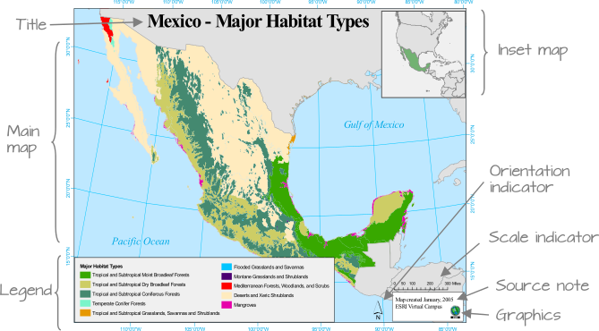
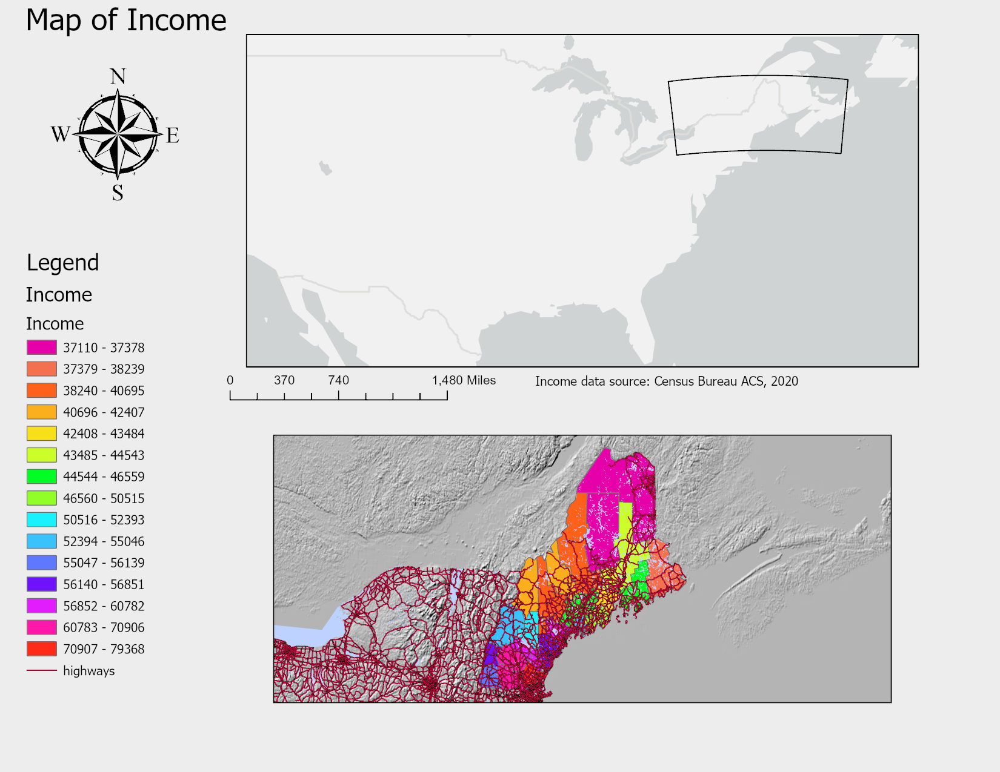
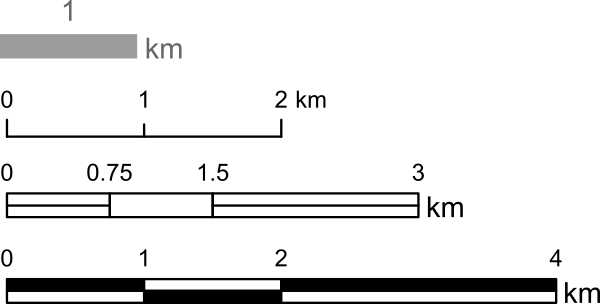
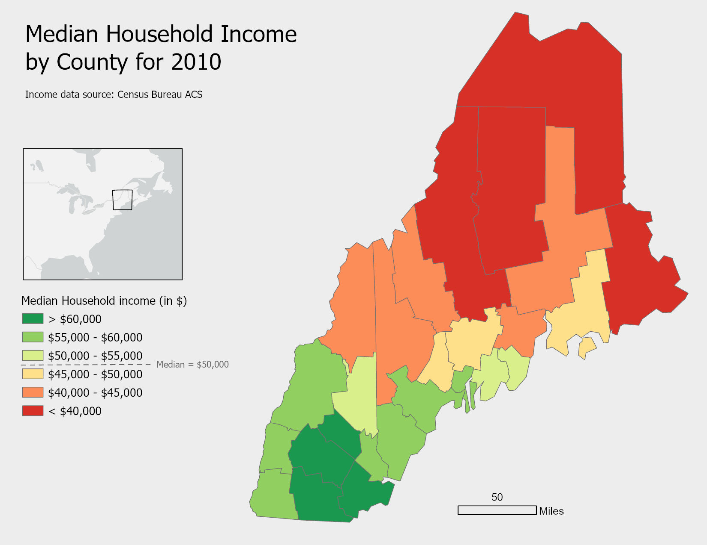
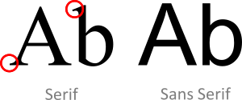
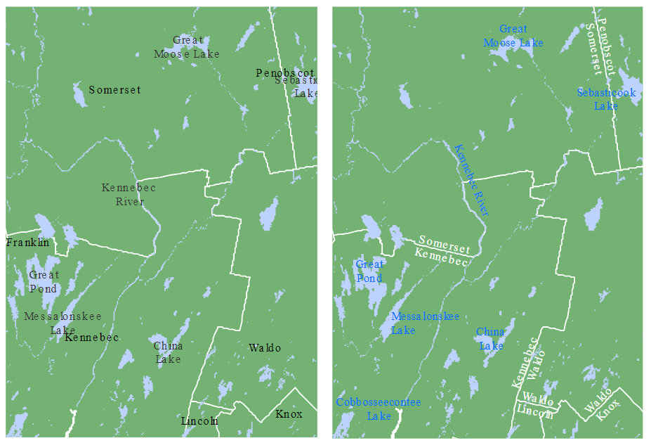

7 Good Map Making Tips
7.1 Introduction
While this course does not focus on cartography, it’s important to recognize that how we present spatial data can significantly influence how it’s interpreted. Even the most rigorous analysis can be undermined by poor map design. This chapter offers a brief overview of practical map-making principles, not as a deep dive into cartographic theory, but as a guide to help you avoid common pitfalls and make thoughtful design choices.
We’ll walk through examples of both ineffective and improved maps, highlighting how layout, color, typography, and supporting elements like legends and scale bars contribute to a map’s clarity and impact. The goal here isn’t to master cartographic technique, but to develop an eye for what makes a map readable, purposeful, and appropriate for its audience.
7.2 Elements of a Map
Maps often include a variety of elements: the main map body, legend, title, scale bar, orientation indicator (e.g., north arrow), inset map, and source or ancillary information.
Not all elements are necessary in every map. In fact, some may be inappropriate depending on the context. For example, a scale bar may be misleading if the coordinate system used does not preserve distance uniformly across the map’s extent.
The purpose and audience of the map should guide its layout. If the map is intended for inclusion in a paper or report, simplicity and clarity should take precedence. If it’s a standalone map, additional elements may be warranted. Similarly, a general audience may benefit from a cleaner, less technical presentation, while a more specialized audience might appreciate added detail.
7.3 How to Create a Good Map
Let’s begin with a cautionary example–a map layout that demonstrates several poor design choices.

A good map establishes a clear visual hierarchy, ensuring that the most important elements–typically the main map body, title (if standalone), and legend–are visually dominant. Supporting elements like scale bars and north arrows should be placed lower in the hierarchy unless they serve a critical navigational purpose.
Within the map body itself, attention should be directed toward the information of greatest importance. This principle is often referred to as figure-ground contrast. The thematic layer (e.g., a choropleth map of income or population density) should generally serve as the figure and attract the viewer’s attention first. Supporting layers such as roads, rivers, hillshades, or administrative boundaries should only be included when they provide useful context. When displayed, they should be symbolized using lighter colors, thinner lines, or greater transparency so that they provide context without competing with the main message. A common mistake is to give contextual layers the same visual prominence as the thematic layer, making it difficult for viewers to identify the pattern being mapped.
When designing choropleth maps, limit the number of color swatches to fewer than twelve. Too many colors can overwhelm the viewer and make it difficult to match map regions to legend categories. Classification breaks should be chosen deliberately–quantile schemes can help distribute colors evenly across the map, while theory-driven breaks may better reflect meaningful thresholds.
Scale bars and north arrows should be used judiciously. They are essential in reference maps (e.g., USGS topographic maps) but often unnecessary in thematic maps, where the focus is on comparing values across regions rather than measuring distances. If included, these elements should be visually subtle.

- Title and other text elements should be concise. If the map is embedded in a report or article, these elements can be omitted in favor of figure captions and accompanying text.
Let’s now look at an improved map layout that applies these principles. A divergent color scheme is used to highlight variation around a median income value. County labels have been omitted to reduce visual clutter and keep the reader’s attention focused on the overall spatial pattern rather than individual counties. The coordinate system preserves distance, justifying the inclusion of a scale bar. The inset map is placed low in the hierarchy and could be omitted for audiences familiar with the region.

7.4 Typefaces and Fonts
Typography plays a subtle but important role in map design. A general rule is to limit the number of fonts to two: a serif and a sans serif font.

Serif fonts are typically used for natural features such as rivers, lakes, and mountain ranges. Sans serif fonts are better suited for human-made features like roads, cities, and administrative boundaries.
Avoid excessive variation in font size unless you are intentionally creating a hierarchy of labels. Likewise, stick to a single font color unless you need to distinguish between categories. The following example shows how thoughtful use of font style and color can improve legibility and feature separation.

7.5 Summary
This chapter introduced practical guidelines for creating effective maps. Good map design helps communicate spatial information clearly while avoiding unnecessary clutter.
- Establish a clear visual hierarchy, emphasizing the most important elements.
- Include only map elements that support the map’s purpose.
- Limit the number of colors and ensure that classification choices support interpretation.
- Use scale bars and north arrows only when they add value.
- Maintain clear figure-ground contrast so that supporting layers do not compete with the primary theme.
- Use fonts consistently and prioritize legibility over decoration.
A good map balances visual appeal with communication, ensuring that every element helps support the map’s intended message.